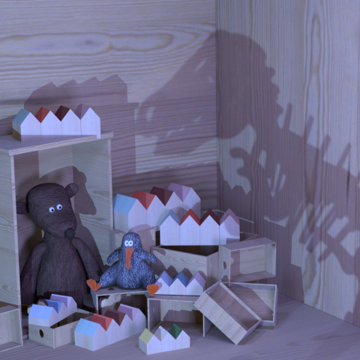
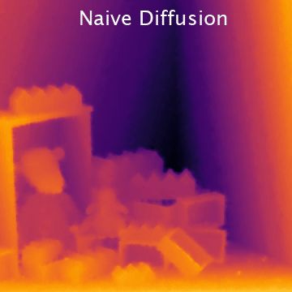
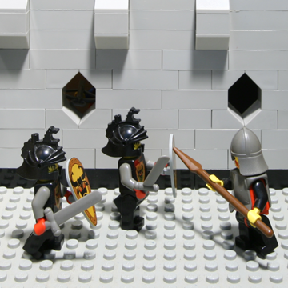
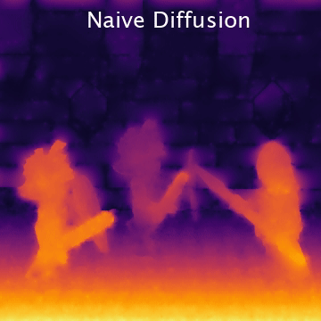
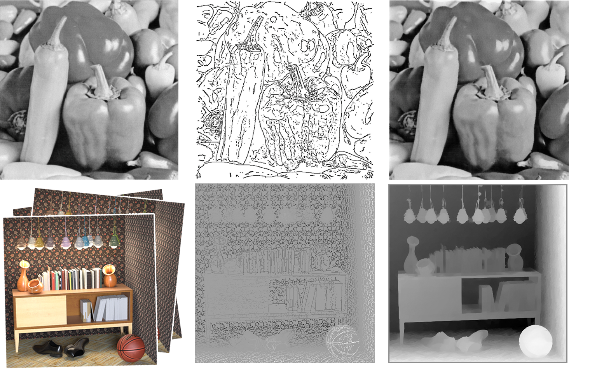
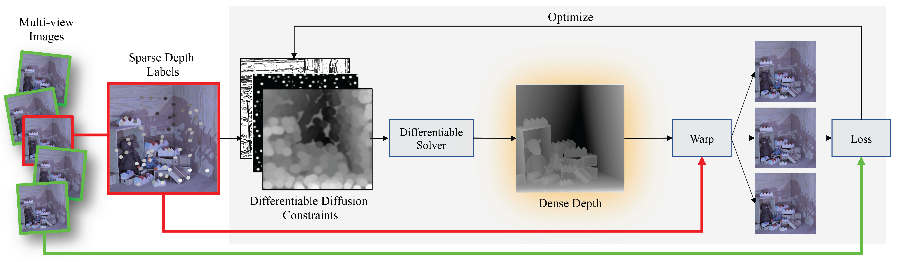

Are Multi-view Edges Incomplete for Depth Estimation? Re-evaluating diffusion-based depth completion through denoising Gaussian splatting
International Journal of Computer Vision (IJCV) 2024




Abstract
Depth estimation tries to obtain 3D scene geometry from low-dimensional data like 2D images. This is a vital operation in computer vision and any general solution must preserve all depth information of potential relevance to support higher-level tasks. For scenes with well-defined depth, this work shows that multi-view edges can encode all relevant information—that multi-view edges are complete. For this, we follow Elder's complementary work on the completeness of 2D edges for image reconstruction. We deploy an image-space geometric representation: an encoding of multi-view scene edges as constraints and a diffusion reconstruction method for inverting this code into depth maps. Due to inaccurate constraints, diffusion-based methods have previously underperformed against deep learning methods; however, we will reassess the value of diffusion-based methods and show their competitiveness without requiring training data. To begin, we work with structured light fields and Epipolar Plane Images (EPIs). EPIs present high-gradient edges in the angular domain: with correct processing, EPIs provide depth constraints with accurate occlusion boundaries and view consistency. Then, we present a differentiable representation form that allows the constraints and the diffusion reconstruction to be optimized in an unsupervised way via a multi-view reconstruction loss. This is based around point splatting via radiative transport, and extends to unstructured multi-view images. We evaluate our reconstructions for accuracy, occlusion handling, view consistency, and sparsity to show that they retain the geometric information required for higher-level tasks.
Method


Presentation
James presented this research as one of the keynote talks in the CVPR 2023 Workshop on Light Fields for Computer Vision (LFNAT).
Citation
@article{Khan_2024,
author = {Khan, Numair and Kim, Min H. and Tompkin, James},
title = {Are Multi-view Edges Incomplete for Depth Estimation?},
journal = {International Journal of Computer Vision},
volume = {132},
number = {7},
pages = {2639--2673},
year = {2024},
doi = {10.1007/s11263-023-01890-y}
}Acknowledgements
We thank the reviewers for their detailed feedback. James Tompkin thanks NSF CAREER-2144956 and Cognex, Numair Khan thanks an Andy van Dam PhD Fellowship, and Min H. Kim acknowledges the support of Korea NRF grant (2019R1A2C3007229).